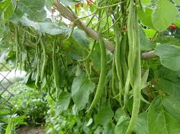

Wheat (Triticum spp.) occupies the prime position among the food crops in the world. In India, it is the second important food crop being next to rice and contributes to the total foodgrain production of the country to the extent of about 25%. Wheat has played a very vital role in stabilizing the foodgrain production in the country over the past few years.
The origin of the durum wheats was probably in the region of Abyssinia, whereas the whole group of soft wheat, which includes the bread wheats, probably originated in the region of Pakistan, SouthWestern and the Southern parts of mountainous Bokhara.
This type was reported to be grown in south i.e. Maharashtra, Tamil Nadu and Karnataka. This type is believed to be developed from T. diccoides koru., a wild form. It is also grown in Spain, Italy, Germany and Russia.
The durum or macroni wheat, cultivation in India, is considered to be very old. It is a best wheat for drought conditions or under restricted irrigated conditions of Punjab, M.P., Karnataka, Tamil Nadu, Gujarat, West Bengal and H.P. It is used for semolina (suji) preparation.
It is a typical wheat of alluvial soils of Indo-Gangetic plains i.e.Punjab, Uttar Pradesh, Bihar and parts of Rajasthan. The bulk of the Indian crop, therefore, consists of this type.
This belongs to the club wheat of western countries. This is found in limited areas of M.P., U.P., of India and in Pakistan. These are characterised by very short and compact heads having a shorter grains.
This is the type presently grown in India in almost all the wheat growing zones. It is used mainly for bread purpose.
The ideal temperature requirement varies from plant type and stages of growth. The dwarf varieties require the following temperature for their growth and development:
| Growth Stages | Temperature Requirements |
| Germination | 20 to 25 0 C mean daily temperature |
| Tillering | 16 to 20 0 C mean daily temperature |
| Accelerated growth | 20 to 23 0 C mean daily temperature |
| Proper grain filling | 23 to 25 0 C mean daily temperature. |
Wheat plants are sensitive to very cold or frost injury at any stage of growth particularly at reproductive growth if temperature is below 150
The wheat crop requires a well-pulverized but compact seed bed for good and uniform germination. Three or four ploughings in the summer, repeated harrowing in the rainy season, followed by three or four cultivations and planking immediately before sowing produce a good, firm seed bed for the dry crop on alluvial soils.
For the irrigated crop, the land is given a pre-sowing irrigation (palewa or raund) and the number of ploughings is reduced. Where white ants or other pests are a problem, Aldrin 5% or BHC 10% dust at the rate of 25 kg/ha should be applied to the soil after the last ploughing or before planking.
Based on above temperature requirement it has been found that for indigenous wheat last week of October, for long duration dwarf varieties like Kalyansona, Arjun, etc. first fortnight of November and for short duration dwarf wheats like Sonalika, Raj 821 etc. second fortnight is the best sowing time.
Generally, a seed rate of 100 kg/ha has been found to be sufficient for most of the varieties like Kalyan Sona, Arjun, Janak, etc.which have moderate tillering and medium sized grains. But a higher seed rate of 125 kg/ha is desirable for late sown wheat and normal sown for varieties like Sonalika, Raj 821 etc. which have bold grains and shy tillering habits.
For irrigated, timely sown wheat, a row spacing of 15 to 22.5 cm is followed, but 22.5 cm between the rows is considered to be the optimum spacing. Under irrigated late-sown conditions, a row spacing of 15-18 cm is the optimum. For dwarf wheats, the planting depth should be between 5 and 6 cm. Planting beyond this depth results in a poor stand. In the case of conventional tall varieties, the depth of sowing may be 8 or 9 cm.
The seed of loose smut-susceptible varieties should be given solar or hot-water treatment. If the wheat seed is used only for sowing, and not for human consumption or for feeding cattle, it can be treated with Vitavax.
It is desirable that 2 to 3 tonnes of farmyard manure per hectare or some other organic matter is applied 5 or 6 weeks before sowing. The fertilizer requirement of the irrigated wheat crop are as follows:
a. With assured fertilizer supply:
Nitrogen (N) @8- - 120 kg/ha
Phosphorus (P2O5) @ 40- 60 kg/ha
Potash (K2O) @ 40 kg/ha.
b. Under fertilizer constraints:
N @ 60-80 kg/ha
P2O5 @ 30-40 kg/ha
K2O @ 20-25 kg/ha.
Total quantity of Phosphorus and potash and half the quantity of nitrogen should be applied at the time of sowing. Remaining quantity of Nitrogen should be applied at the time of crown root initiation.For the late sown irrigated wheat crop, the NPK fertilizer dose recommended is:
N – 60-80 kg/ha
P2O5 – 30-40 kg/ha
K2O – 20-25 kg/ha.
Generally weeding is done after 1 ½ to 2 months after sowing or weedicides like 2,4 D, Avadex or Nitrofen (Tok E-25) for controling Chenopodium sp, Angallis sp. Asphodelus sp. Phalaris sp. of weeds.
The high yielding wheat varieties should be given five to six irrigations at their critical growth stages viz. Crown root initiation, tillering, jointing, flowering, milk and dough which come at 21-25 days after sowing (DAS), 45-60 DAS, 60-70 DAS, 90-95 DAS, 100-105 DAS and 120-125 DAS respectively. Off these irrigation at CRI stage is most important.
For controlling diseases following chemicals are used. Preventive and control measures of the commonly occurring diseases in wheat
| Name of the disease | Preventive measures | Name of chemicals | Rate |
|---|---|---|---|
| Smut | 1.Use of healthy seeds 2. Roguing & burning of disease affected plants 3. Use of resistant varieties 4.Solar heat treatment | Seed dressing with Vitavax/Benlate/G 696 | 2-2.5 g/kg of seed |
| Rust | 1. Use of resistant varieties 2.Timely sowing | Zinc/Manganese | - |
| Bunts | Use of resistant varieties | Seed dressing with Agrosan GN/Vitavax | 2 g/kg of seed |
| Powdery mildew | - | Dusting with yellow sulphur, Sodium thiosulphate, Karathane/Miltox or spraying with Benlate | - |
| Molya | 1. Deep summer ploughing 2. Adopt crop rotation 3. Soil treatment | Nemagon DECP 60% EC dripping with first irrigation water | 20 litres/ha 30 ml./ha |
The rain-fed crop reaches the harvest stage much earlier than the irrigated crop. The crop is harvested when the grains become hard and the straw becomes dry and brittle.The harvesting is mostly done by sickle. The crop is threshed by treading with cattle on the threshing-flour or by power driven thresher.
The national average yield of wheat grain is about 12 to 13.8 quintals per hectare.
The grains should be thoroughly dried before storage. The storage life of the grain is closely related to its moisture content. Grains with less than 10 percent moisture store well.
The beans belong to the family Leguminosae. They are considered as nutritious vegetables as they contain high amount of vegetable proteins. Besides carbohydrates and vitamins. The green tender pods are used as vegetable and also the dry seeds. The beans for drying are grown till the seeds are large enough and pod begins to dry. The pods are shelled and seeds are separated. The shelled dry bean has good market.
The various beans cultivated in India particularly in home gardens and some commercially are as follows:
1. French beans (Phaseolus vulgaris)
2. Cow pea (Vigna sinensis)
3. Cluster bean (Cyamopsis tetragonoloba)
4. Broad bean (Vicia faba)
5. Lima bean (Phaseolus lunatus)
6. Soya bean (Glucine max)
7. Garden beans (Dolichos lab lab).
There are also many other beans, which are grown in south and northeastern India and in the hilly regions.
The French beans which are also called as snap bean has dwarf type and pole type. Generally it needs cool climate and therefore cultivated during Rabi season, cut as the bean is day-neutral plant. It can be cultivated in August – September and also from December - February in northern India. The pole type is a climbing plant and needs some support to climb, either bamboo or wooden sticks.
The cowpea is a warm season bean and grown during rainy season but the temperature should not be below 200C. It is trailing plant and needs staking. The early varieties require 70 to 90 days to mature while the late varieties need 120 to 150 days. Well-drained loamy soil is best but can be grown in any type of soil. There are many cowpea varieties, some are bushy and dwarf and some creeping. The seeds also differ in colour, size, shape and pods.
The Dolichos beans are grown throughout India. There are many local types particularly in eastern India and in south. It needs cool climate but can be grown in any kind of soils. The colour of flowers, size, shape and type of pods, size and shape differs from strain to strain. It is a good bean for kitchen garden. The tender pods are used as vegetable.
The cluster bean is mainly grown in the dry, warm, arid regions of India, which is known as Guar. The plant is hardy annual 1 to 3 meters in height. There are dwarf and tall types. The seeds are black, brown and white. The fleshy green tender pods are used as vegetables. The rough skinned hairy types are used as fodder for the cattle and also as green manuring crop.
Lima beans are not commonly grown in India but it has importance in foreign countries. The beans are flat seeded and large and mainly it has two types, Pole type and Bush type. Lima needs mild cool climate and prefer heavy clay soils. The plants are deep rooted and the climbing type needs support for growth. So staking is necessary. There are many varieties and strains; some are introduced from U.S.A.
The Broad beans are also not very much popular but are grown in some states and hilly regions. The pods are in cluster and it has not branches. The seeds may be yellow, black or white. However it can be grown in plains during September and October.
The sword beans has deep roots, the leaves are pinnate, trifoliate, dark green and long. They are grown in home gardens. Some are shrubs and some are climbing type. The pods are thick, long, and leathery and look like a sword.
In case of the Goa bean or winged bean or ridge bean the pods are used as vegetable and each pod has four feathery wings on four sides. It is a creeping type and is mostly grown in home garden particularly in south India and northeast India.
Soya bean is very popular in Japan and China. It is a versatile bean with high protein content. Its cultivation is now done in India on a wide scale because of its industrial uses. It is grown in sub-tropical regions and in hilly slopes.